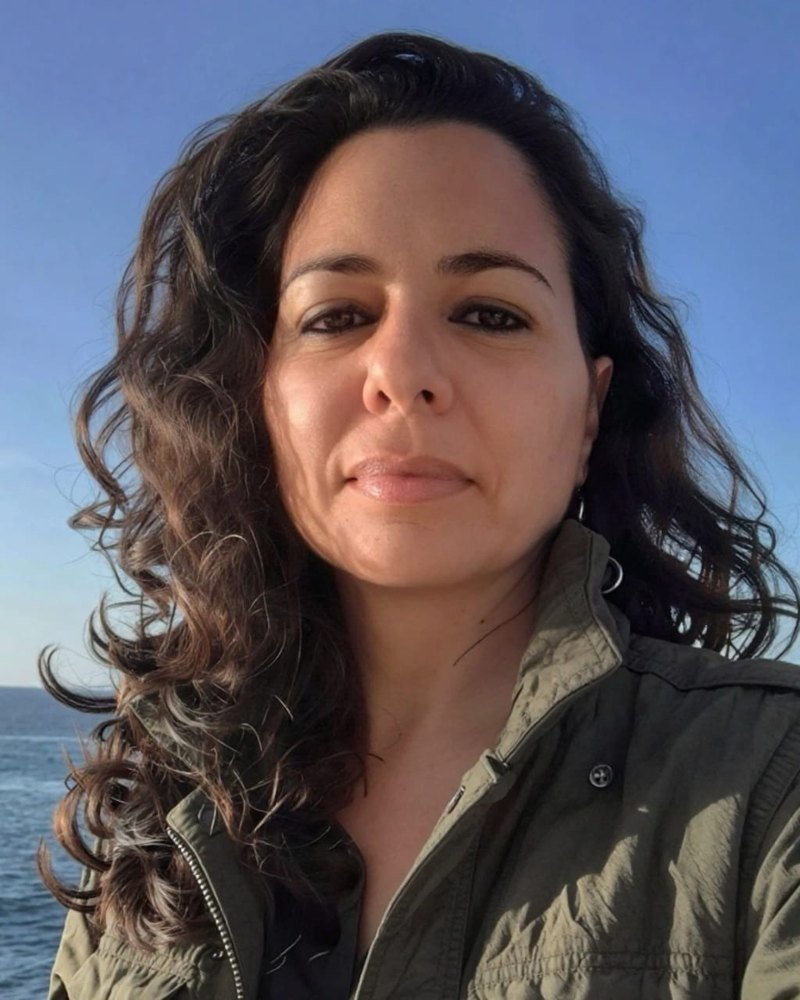

2024–2026, ICCT e Universidade do Porto, com 27 países da União Europeia, Reino Unido e Islândia
Calculou as mortes e os custos em saúde que uma área de controle evitaria no Atlântico Nordeste, e embasou a proposta de 27 países da União Europeia, do Reino Unido e da Islândia, adotada pela Organização Marítima Internacional em 2026.
Quantas mortes e quanto custo em saúde uma área de controle de emissões no Atlântico Nordeste evitaria?
Método
Dois relatórios do ICCT (2024) comparam cenários com e sem a área de controle, sob diferentes níveis de cumprimento, em emissões, saúde e custo.
Resultado
Entre 2.900 e 4.300 mortes prematuras evitadas de 2030 a 2050; €19 a €29 bilhões em custos de saúde; 82% menos óxidos de enxofre e 64% menos material particulado fino. Os relatórios embasaram a proposta de 27 países à Organização Marítima Internacional, adotada em maio de 2026.
Levou a evidência sobre poluição e saúde a um público que as conferências não alcançam, com a nomeação do muralista Eduardo Kobra como embaixador da Organização Mundial da Saúde e porta-voz da campanha BreatheLife.
Como levar a evidência sobre poluição e saúde a públicos que as conferências não alcançam?
Método
Organização da Segunda Conferência Global sobre Poluição do Ar e Saúde, da Organização Mundial da Saúde, em Cartagena, em março de 2025, com mais de trinta eventos de alto nível, Estados-membros, cidades, agências das Nações Unidas e bancos de desenvolvimento; planejamento e execução da participação de Eduardo Kobra.
Resultado
A nomeação de Eduardo Kobra como embaixador da Organização Mundial da Saúde e porta-voz da campanha BreatheLife, em 27 de março de 2025.
Eventos
Segunda Conferência Global sobre Poluição do Ar e Saúde, Cartagena, 2025
Patricia Ferrini e Eduardo Kobra em CartagenaO painel, em Cartagena
Como reduzir o carbono negro das queimadas numa ilha onde o fogo é ferramenta agrícola?
Método
Brigada comunitária, material educativo para escolas (revista, pôster e plano de aula), detecção de focos por inteligência artificial e um policy brief sobre manejo integrado do fogo, com apoio do Clean Air Fund.
Resultado
A primeira brigada comunitária do Norte a operar com detecção por inteligência artificial; apresentação na COP30, em Belém; cobertura de Record, CNN, Folha e Correio Braziliense.
Qual matriz energética para os caminhões produz menos emissão, menos mortes e menos custo até 2050?
Método
Cinco cenários (diesel, híbrido a diesel, gás natural, biodiesel e elétrico) avaliados em emissões, saúde e custo socioambiental para a frota pesada de São Paulo.
Resultado
A eletrificação reduz 46% das emissões e evita R$ 5 bilhões em custos até 2050; o híbrido a diesel reduz 8%; gás e biodiesel aumentam emissões líquidas e custos; o biodiesel puro exigiria cerca de 215 milhões de hectares, um quarto do território nacional.
Eventos
Latam Mobility & Net Zero Brasil, São Paulo, 2026 (keynote)
ConsultoriasOrganização Mundial da Saúde, Programa das Nações Unidas para o Meio Ambiente e Coalizão do Clima e Ar Limpo, Ministério da Saúde do Brasil, Instituto Ar.
PesquisaInternational Council on Clean Transportation, NASA Goddard Space Flight Center, Universidade de São Paulo, Universidade do Porto, Université Grenoble-Alpes, Leibniz-Institut für Umweltmedizinische Forschung.
EventosAssembleia de acionistas da Volvo, Gotemburgo, Suécia, 2026; Latam Mobility & Net Zero Brasil, São Paulo, 2026; COP30, Belém, Brasil, 2025; Climate Week NYC, Nova York, Estados Unidos, 2025; COP21, Paris, França, 2015.
CoberturaRecord, CNN Brasil, Folha de S.Paulo, Correio Braziliense, Jornal da USP, Exame, Diário do Pará. Na mídia
Sobre

Patricia Ferrini
Doutora em Física Atmosférica pela Universidade de São Paulo, Brasil, com pesquisa em parceria com o Goddard Space Flight Center da NASA, nos Estados Unidos. Pós-doutora em Economia do Desenvolvimento Sustentável pela Université Grenoble-Alpes, França, e em Saúde Pública pelo Instituto de Estudos Avançados da USP. Pesquisadora convidada da Universidade do Porto, Portugal. Consultora da Organização Mundial da Saúde e do Programa das Nações Unidas para o Meio Ambiente. Fundadora do Futura Evidence Lab.